How Does a Computer Execute a Program?
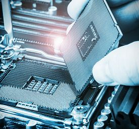
When you first power up your computer or your phone or your touch pad, a bunch of programs are loaded into the device's memory and are executed. In fact, whenever you start your car, start your microwave oven, adjust your room temperature, turn on your TV, dishwasher etc., programs are loaded and executed. Just about every electronic device has a processor that executes programs. Have you ever wondered what is a program, and how does a computer actually run a program? In this article we will look behind Oz's curtain and see what actually happens inside a computer as it executes a program.
Just like in the movie when a simple man was discovered behind the curtain, when we look inside the cover of a computer and then inside all the components we see one simple principle that is used over and over again. The way that a computer works is defined by its basic unit, the transistor. This simple electronic device was invented by three physicists-electrical engineers at Bell Labs, which was the research arm of the then AT&T.
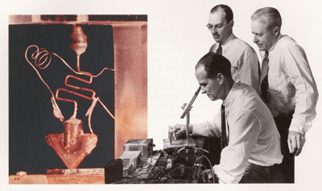
About 10 years later transistors were mass produced and used in electronic devices such as the transistor radio.
Fortunately there was a need to make transistors smaller than the one pictured above. The need was driven by the thought of a multiple trillion dollar set of businesses. Computer size has diminished considerably over the last 50 years. Computers with the capacity of just your phone did not even exist 50 years ago. Fortunately demand has driven down the size of transistors so that now over 7 billion can be placed on a processor. The transistors that are used on leading edge processors measure about 10 nanometers across. (NOTE: A nanometer is a billionth of a meter. A human hair is about 75,000 nanometers in diameter. Two silicon atoms bound together measure one nanometer.) It is interesting to note that processor capacity (number of transistors that fit onto a processor) has grown at a rate of doubling every 2 years. As of 2014 this growth has continued from the start of the 1970's. See this article for more. Just to put things into perspective, your iPhone 7 has about 64,000 times the memory capacity than the on board computer of Apollo 11 that first landed on the moon.
For application in computers, a transistor is a device that is able to hold information. When I say information, don't think of images, spreadsheet data, or files. Instead think of off or on. That's it. This important device is able to either be electrically charged or not charged. You see, charged or not charged is information. All the information that a computer is able to process in memory is stored in small transistors that are either charged or not charged. So a computer takes a simple theme like charged/not charged and builds up a whole symphony of special effects.
How can you build something so complex out of something so simple? Well have a look at this painting:
This complex image of a tiger is made up of nothing more than triangles. So the artist started with a simple theme of a triangle and built up a whole image by using variations on the original theme.
Most likely you have a question at this point: How do you store complex information in a computer whose storage units are only capable of storing charged/not charged? For example, how would you store the text that appears on this page that is made up of alpha-numeric characters in storage units of charged/not charged? Suppose that we put 8 transistors in a group and attempt to use patterns of charged/not charged to represent each letter:
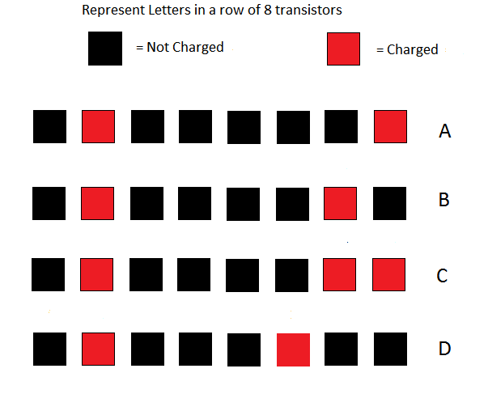
The patterns shown in the above image are a subset of a larger set of patterns called ASCII codes (American Standard Codes for Information Interchange). In order to avoid having to represent transistors' states in colored boxes, we arbitrarily assign the numeral 0 to represent no charge and the numeral 1 to represent charged. So when we talk about the transistors' states for text, we use the numeric ASCII codes. Here are the same transistors with 0 and 1 indicating their charge:
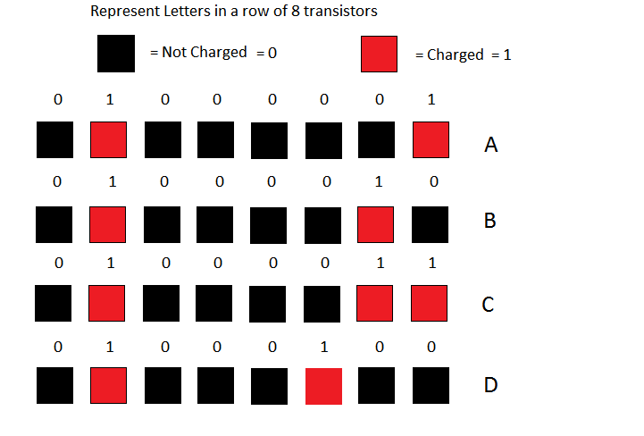
Here is a simplified table for all the letters. Here is a more complete table for all textual symbols.
In the above table, you can see that the representation for the letter A in terms of ones and zeros is 01000001. The representation for the letter B is 01000010. We call representations of values stored in a computer binary representations. The term binary is used because the number system uses only 2 digits (namely 0 and 1). This naming system extends for all number systems including our own familiar decimal system since that system uses 10 digits (0–9).
Note that ASCII is actually outdated since the characters only represent characters from the Latin alphabet. A much more expanded table that includes symbols for most of the other world languages is called UTF-8. The ASCII table is a subset of UTF-8.
Here is some computer terminology that we use when speaking about transistors' states: One transistor in memory is called a bit. A group of 8 transistors in memory is called a byte. (The word bit is derived from the phrase: binary digit.) So one text character takes up a byte of memory. Incidentally, when data gets stored on a hard drive or on flash memory, the same coding standard is used.
Even though there is a textual representation of the numerals 0–9, this representation is inadequate for doing arithmetic calculations. For example, the ASCII representation of the textual number 2 is 00110010, for the textual number 3 is 00110011. The representation of a number using only one byte (8 bits) is inadequate for doing calculations since the maximum number that we could represent using only 1 byte is 11111111 which is 255 in decimal.
If we wanted to represent numbers that we can calculate with, we need another system of representation. The maximum number of bits that we can use is determined by the physical design of the computer's Central Processing Unit (CPU). Most consumer computers have CPUs that are able to handle 64-bit numbers (8 bytes). So the number 1 represented as 64-bits is simply: 0000000000000000000000000000000000000000000000000000000000000001. The number 2 is represented as: 0000000000000000000000000000000000000000000000000000000000000010. Using this 64-bit representation, the maximum positive decimal integer number that can be handled is 9,223,372,036,854,775,807.
Below is a table that shows the binary representation of 0 and the first 16 positive integers. Note that all the leading zeros have been omitted in order to make the binary values more readable. Take a close look at the binary numbers in the table as you progress from the values of 0 to 16.
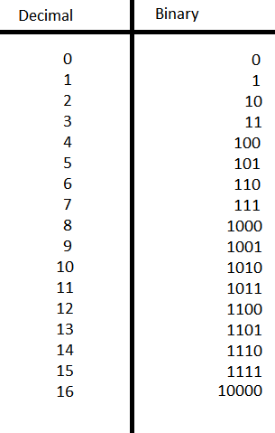
Everything up to this point in the article has just been preparation that we needed to go through so that we can visit and understand the inside architecture of a computer. The preliminary discussion so far was necessary so that you could learn to read the language of the strange place you are about to visit. Just as your visit to a foreign country is enhanced if you know a little of the language of that country, so will be your visit to the inside of a computer if you know a little of its language. You are now ready to start the tour.
Our first stop is the place where arithmetic calculation is done. Inside the Central Processing Unit (CPU) are a number of special 64-bit storage areas called Registers. Registers in the CPU are specially built for speed. One of the CPU Registers is called the Accumulator. The Accumulator is where calculations are done. A value is placed into the Accumulator, a calculation is done there, and then the result of the calculation is copied to either another Register or to main memory. Since all numeric values are represented in binary form, the steps taken for calculations are incredibly simple. Let's look at how a computer does addition.
If you recall your childhood when you were learning arithmetic, you had to learn your addition tables. That is, you had to learn how to add all combinations of numbers taken two at a time where the numbers ranged in value from 0 through 9. Thanks to the commutative law of addition where a+b=b+a, you had to learn only 55 combinations rather than 100.
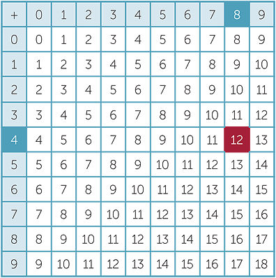
You will be relieved that the addition table in binary contains only 3 unique possibilities: 0 + 0 = 0, 0 + 1 = 1, and 1 + 1 = 10:
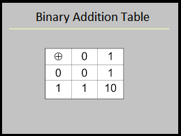
Since there are only 3 unique entries in the binary addition table, binary arithmetic is much more simple than decimal arithmetic. In order to enable the addition of two binary numbers, we only need to know the three results from the binary addition table. When the CPU needs to add two numbers, the circuitry starts with the low order bits (rightmost bit) and works its way to the high order bits (leftmost bit), adding bit by bit. Before we look at how the CPU adds two binary numbers, let's see how a human would do the work. Look at the image that shows the addition of two binary numbers, namely: 01100101 and 01110110. Follow how a human would add these two numbers starting from the right column labeled bit 0 and working left to bit 7.
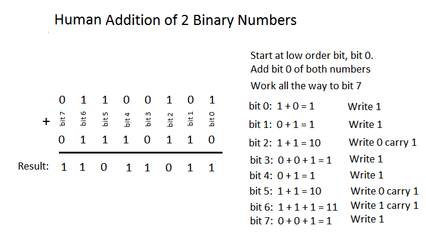
Remember that bits are just transistors that can be either charged or uncharged and that we represent the transistors' states by 0 and 1. Addition in the CPU is just a matter of switching the charged state of the transistors. From the computer's point of view, there is really no "addition" as we humans would calculate. Instead, look at the Binary Addition Table above. Notice these two important patterns: (1) Whenever we add a 0 to a bit, that bit's value does not change. (2) Whenever we add a 1 to a bit, that bit's value gets flipped to its opposite state. We can state these two patterns as such:
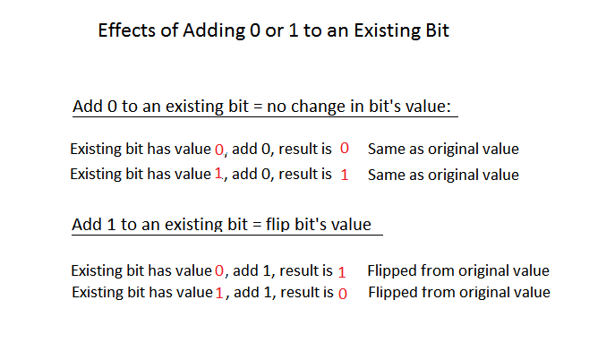
You can see from the above image that a computer does not really "add" as humans do. Instead it just flips bits according to the two rules in the above image. There is however another rule that must be added to the first two in order to make the addition process complete. How does the computer handle carry? Remember if 1 + 1 = 10, we put down 0 and carry the 1 to the next place (bit). Recall in the image titled Human Addition of 2 Binary Numbers, when we added the two bit2 values together, the result was 10, so we wrote down 0 in bit2 result and carried a 1 value to bit3. In bit3 we added the two values 0 and 0 together with the carry of 1 and wrote down the value of 1 in bit3 result. In order to accommodate the carry problem, we add a third rule: Whenever we have 1 + 1, we set a bit in the CPU called the carry flag.
The image below shows how the CPU carries out the addition of two numbers. One number is first placed into a special high speed register called the Accumulator. This high speed register holds the number and the result of the sum after a bit by bit process is executed. The image below shows how the CPU does the addition. Notice that there is really no addition that takes place. The result is obtained by simply flipping the bits in the Accumulator according to the three rules stated above.
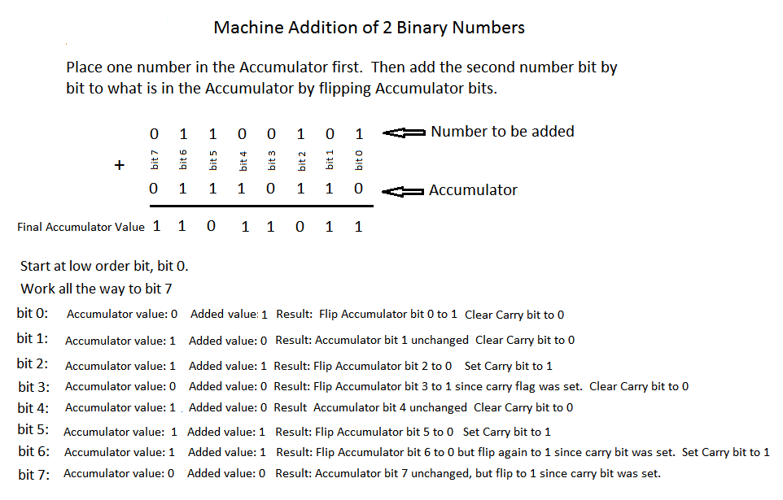
The main objective of this discussion of binary addition in the CPU is to point out that binary addition is carried out by logic rather than by actually applying arithmetical rules for addition. Each bit in the CPU's Accumulator is attached to a small set of logical mechanisms made of transistors. This set of logical mechanisms carry out the logic of flipping bits. If you are interested in checking out how these logical mechanisms work, check out this link. Also, here is another link that starts with the transistor and shows how integer representation is accomplished.
You have now seen how computers store text and positive numbers. There are many other data types that computers are able to store. What about numbers with decimal points? They are called floating point numbers and are represented by what is called an IEEE standard.
How are images represented? We need to represent an image in a way that is compatible with computer storage. You can guess where we are going with this since you already know that computers can only store information that has two states: on and off (remember the transistor). So we define the individual unit of an image to be a pixel. We take a whole image and divide it up into a grid of pixels. Each pixel contains color information about that particular spot on the image. There are different kinds of color coding systems that have been invented, but the most popular is called RGB. This acronym stands for Red, Green, Blue. By mixing different intensities of Red, Green and Blue, we can create a good number of colors.
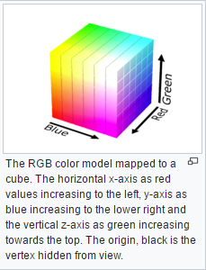
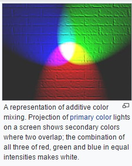
The RGB system allows us to specify 256 intensities of Red, Green, and Blue respectively. That means the RGB system allows us to express 256×256×256 = 16,777,216 different colors. Now how many bits does it take to represent 256? Keeping in mind that 0 represents a valid RGB value, then we need only to represent the decimal number 255. If you multiply 2 by itself 8 times, you get 256. So 256 written in binary is: 1 0000 0000, so 255 is just one less: 1111 1111. Notice that this binary number fits nicely into 8 bits (or one byte). So one pixel using the RGB system is defined as 3 sets of 8 bits, where each set of 8 bits represents the intensity of Red, Green, or Blue. The most intense value of a color is 255, or in 8 bit binary: 1111 1111, and the least intense value of a color is 0, or in 8 bit binary: 0000 0000. So if I wanted to represent one pixel as pure black (lack of all colors), then its RGB combination of 24 bits would be: 0000 0000 0000 0000 0000 0000. Here are some other values:
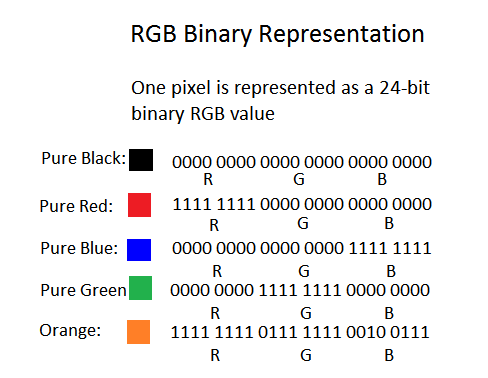
When an image is converted into pixels, the process starts in the upper left corner of the image, an analog to digital converter samples one small square of the upper left corner of the image and converts the average colors to one RGB value. That first RGB value occupies the first 3 bytes of the digital image. The next square to the right of the first one is analyzed and its colors are converted into an RGB value, so the second value of the digital image is written in the next 3 bytes of the digital image representation. Here is a great video that explains the encoding.
That is how an image gets converted to a group of 1's and 0's. Here is a great link that enables you to interact with an RGB table that shows the values of RGB combinations for different colors.
Here is a typical image that happens to be about 1000×900 pixels.
Now if we were to zoom in and focus on the head of the club, you can see the pixels:
You can open any image file in a utility application and zoom in to see the image at the pixel level. If you are running a Windows OS, use Paint.exe. If you are running macOS, use Preview.app.
You probably have guessed that when your computer needs to render an image on the screen, the image is first loaded into memory, and a program is run that streams the pixel values from memory to your screen, starting with pixel 0 which was the upper left corner of the image. You may have experienced that when either your internet speed is slow, or your computer is overloaded and is running slow, that an image gets rendered slowly on your screen. When this happens, you can see how the program streams the pixel values to your screen. The image gets rendered starting with the upper left pixel and then displays left to right, row by row until it reaches the bottom of the image. So when your images load slowly, don't get frustrated, just sit back and enjoy the fact that you are able to visually experience how an image gets rendered on your screen.
Before we leave the topic of images, you probably have the feeling that images take up a lot of memory or disk space. That is definitely true. Furthermore, images take up a lot of processing power in order to render them on your screen. Computers today all come with graphic processors. That is, the computer has a separate processor (separate from the CPU) whose sole job is to process and render images. There is no way you could watch a YouTube video without a graphics processor. Another important consideration is how do we deal with the transmission of such large files across the internet. The reality is that the devices that create images, such as photographs, include much more color and intensity information than the human vision system can detect. So if you see an image name that ends with .jpg, .jpeg, .gif, .tiff, .png, .bmp, etc., that suffix indicates that the image has been compressed. That is, some of its visual information has been removed for the sake of file size. Some complex mathematical algorithms are used to compress the image. Then, with the help of the separate graphic processor in your computer, the compression is somewhat reversed, and the image is displayed on your screen. Now before reading on, I am sure that you could come up with a good idea of how to compress an image. Just take a look at the golfer image above. Imagine the process of digitizing that image. Start with an imaginary pixel at the upper left corner and then digitizing horizontally across; then go down a row and continue until you scan to the bottom of the image. What do you notice about the process with this image? Stop here and think about it.
Without knowing anything about compression, you notice that if you were to digitize this image pixel by pixel, there would be a huge amount of repetition. The first 1/3 of the total pixels in the whole image would all have the same value (sky): . There is also a lot of this color (bunker sand): , and a whole lot of grass: . So when digitizing, when there are a good number of repetitions in a region, why not just indicate their color and the location of the region and eliminate all the repetition. So that is a crude first run at devising an algorithm for compression: minimize repetition. Secondly, if we were to go to a scientist that studies how human vision works, we would find that the human vision mechanism notices changes in color intensity before it notices an actual change in color.
Here is a non-mathematical description of how JPEG compression works. At the heart of the JPEG compression is a mathematical algorithm called the Discrete Cosine Transformation (DCT). Even if you have no mathematical skills, you should still look at the DCT article. Why? Because it answers the question you most likely asked in school: "What does this Math stuff have to do with reality?". The DCT algorithm is only one of hundreds of thousands of mathematical algorithms that have been developed that affect your daily life. You take pictures with your phone (Your Phone!) and share them instantly electronically with friends. Please consider this: Everything from the creation of the food you eat to the processes that dispose your waste is based on mathematical algorithms. Just do the Math.
It's hard to leave the subject of images and vision. Please allow for just one more side track. A common question that is asked is: "Is human vision analog or digital?". The retina of our eyes contains about 125 million light sensitive cells called "rods" and "cones". Rods are used for monochrome vision in poor light, while cones are used for color and for the detection of fine detail. Cones are packed into a part of the retina directly behind the lens called the fovea, which is responsible for sharp central vision. There are three kinds of cone cells that are each more sensitive in one region of the light spectrum: red, green and blue. So "red" cones respond more actively to light in the red part of the spectrum. "Green" cones respond more actively to light in the green part of the spectrum, and not surprisingly, "blue" cones respond more actively to light in the blue part of the spectrum. Wow, this Red, Green, Blue system for coding of images sounds familiar. It is interesting that the RGB color model theory was developed in the mid 1800's by Thomas Young and Hermann von Helmholtz. This work was called the Young-Helmholtz theory, a theory of trichromatic color vision. Like many scientific discoveries, the theory was first based on a mathematical model and then Young and Helmholtz proposed that human color vision must work like their theory. Indeed, here is a sketch of theirs that shows how the eye most likely handles colors (remember this was published in 1850):
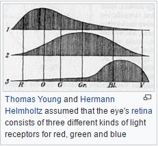
The Young-Helmholtz prediction about color sensitive cells was verified in 1956 and in 1983 was verified to exist in human eyes. Here is a more detailed discussion about rods and cones. When light strikes either the rods or the cones of the retina, it's converted into an electric signal that is relayed to the brain via the optic nerve. See this link for a physiological discussion of how the eye works. The brain then translates the electrical signals into the images a person sees. So it appears that the image gathering mechanism of the eye, namely the retina, could be viewed as digital. However, we cannot say digital for sure since little is known about the very nature of the signals that receptors send to the brain. Also, little is known about how the brain processes those signals to form an image impression. Remember, the eye is just a receptor mechanism; we do not "see" the image until the signals have been processed by the brain.
The Young-Helmholtz theory is typical of thousands of scientific theories. The theory started out as an abstract idea about how to approximately reproduce colors from three sources. Who would care about this subject in 1850? With little support and only a handful of interested people they developed the theory because it interested them. This is called pure research. So 100 years later it was verified that human sight is based upon this theory, and in another 30 years it was used for color TV, and in another 50 years it became a standard for computer display. So the technology that you are using right now to view this article came from that pure research that was done about 160 years ago.
Ok, so now that the preliminaries are out of the way, how does a computer execute a program? Well first, what is a program? A program is a set of instructions that are first written in a high level, human readable language. Here is an example of some code written in a human readable language:
int c = 12 + 15;There are dozens of high level languages. Some are specialty languages that are made for specific purposes, while others are general languages that are more flexible and are adaptable to many different kinds of applications. A high level language is written as text that has its own syntax and grammar. While in text form, the instructions in the high level language cannot be executed because no CPU available has built into it the ability to understand all of the different syntaxes and grammars. Instead, that set of high level instructions is translated (compiled) into code (expressed in terms of 1's and 0's) that the computer can act upon. The individual instructions that a CPU can understand forms the instruction set of that CPU. The CPUs used in everyday computers have about 100–150 instructions in their set. There is a unique bit pattern for each CPU instruction. During manufacturing, a CPU is loaded with a set of microcodes that determine how each instruction is to be executed. Also at manufacture time a lookup table is loaded into the CPU. This lookup table associates the bit pattern that identifies the instruction with the microcode that carries out the instruction. So every action that your computer is able to perform is ultimately translated and expressed in terms of combinations of the 100–150 instructions that comprise the CPU's instruction set. Here is a PDF document that is a whole CPU specification and starting on page 13 is a list of its instruction set.
The unique bit pattern that identifies an individual CPU instruction can be any combination of 1's and 0's. It is up to the manufacturer to define the bit pattern. It is important to understand that all machine instructions consist of a verb called the operation code (OpCode) and zero or more operands (objects) that the verb acts upon. So when you see a machine instruction, it is like reading a simple sentence. There is an action that gets carried out and there are objects that get acted upon.
Let's look at how the code c = 12 + 15 would get compiled into machine instructions. A compiler would look at this
code and see three necessary machine instructions in order to carry out the addition. In human readable form, this is
what the compiler sees:
Copy the number 12 to the Accumulator
Add the number 15 to whatever is in the Accumulator
Copy the result in the Accumulator to memoryRemember that the bit patterns that represent machine instructions are completely up to the CPU manufacturer to invent. So even though the bit patterns vary from CPU to CPU, the actual machine instructions are much the same for all CPUs. For the three machine instructions that we have identified (two Copy instructions and one Add instruction), let's arbitrarily assign three separate bit patterns that will represent these three machine instructions:
Copy to the Accumulator: 0000 0001
Add a number to the Accumulator: 0000 0010
Copy the value in the Accumulator to memory: 0000 0011
Using the above bit patterns to represent the three machine instructions, here is how the human readable code
c = 12 + 15 would be translated (compiled) into machine instructions. If a machine instruction needs an operand to act
upon, the operand immediately follows the OpCode. For example if we want to copy a value of 12 to the Accumulator, the
machine instruction for copy to the Accumulator is immediately followed by the value 12 (in binary: 0000 1100).
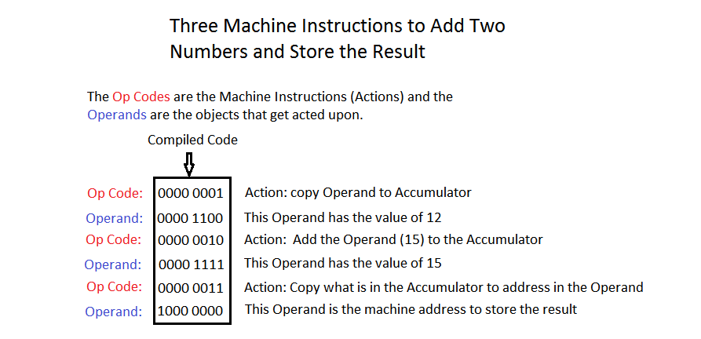
Notice that we are using only 8 bits (one byte) to represent OpCodes and Operands. We do this just to shorten the display of the code. In fact, if a CPU is a 64-bit variety, the OpCodes can be expressed as 2 byte bit patterns while the operands can be expressed as 64 bit values. For now in our example, we will just use a simplified one byte expression of the code.
So we have completed the first step of running a computer program. We have written the program in a human readable language and have compiled the code into machine instructions. The compiled code is stored on your hard drive. When we want to actually run the program, meaning that we want to execute all the code in the program, we use a launch method that is provided by our operating system. Your operating system most likely has icons on the desktop or in the menu bar at the bottom of your screen. These icons are just visual shortcuts that aid in launching a program. For example, you may have these icons on your desktop or menu bar:
When you click on one of these icons, your operating system launches the appropriate program: either Windows IE, Chrome, or Firefox browser. When the operating system launches a program, it sets into motion a multi-step process that will execute the code in the appropriate program. The first step is to load the program into memory from the hard drive. During the process of loading the code into memory, each instruction is copied in consecutive memory bits. So since the first instruction (OpCode plus Operand) is 16 bits (two bytes) long, it will occupy the first 16 bits of memory. If we arbitrarily start with memory address 0000 0000, then the address of the OpCode of the first instruction will be 0000 0000, and the address of the Operand of the first instruction will be 8 bits down: 0000 1000. Since the second instruction has an OpCode and an Operand, it too will be 16 bits in length. So the address of the OpCode of the second instruction will be 0001 0000, and the address of the Operand of the second instruction will be 8 bits down: 0001 1000.
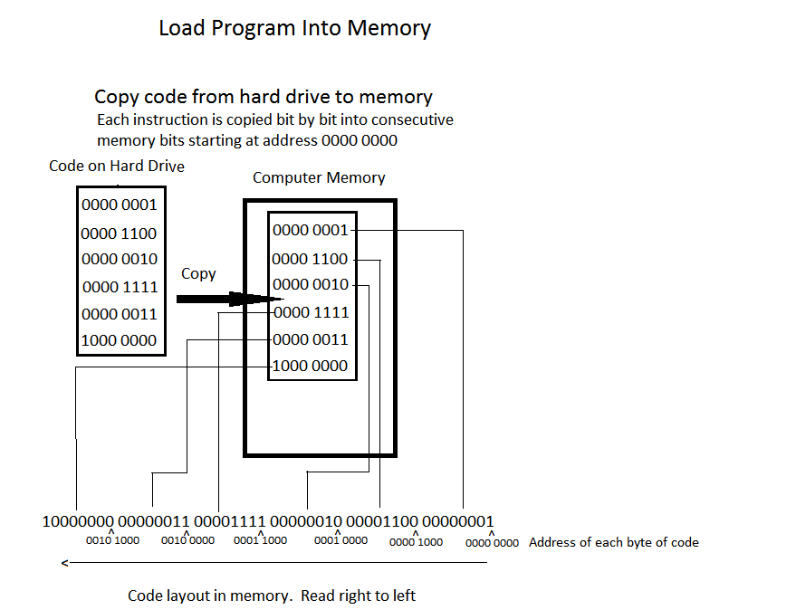
Once the program is loaded into consecutive memory bits, the CPU starts a process called Fetch and Execute. Just imagine if you were a CPU and you wanted to execute instructions that were loaded into consecutive memory locations, how would you proceed? Of course you would start at the address of the first OpCode, execute it, then move to the address of the next OpCode. That is what Fetch and Execute means. This Fetch and Execute process is hard-wired into every CPU. This process is itself another program, but it is built into the CPU so it does not need a separate Fetch and Execute process.
What follows is a step by step explanation of how Fetch and Execute is accomplished in the CPU. At the heart of Fetch and Execute is a special CPU register called the Program Counter (PC). The PC is used to locate the individual OpCodes in the program. The PC holds the memory address of the next OpCode to be executed. So the Fetch part of the process is accomplished by looking at the memory address that the PC currently holds, "Fetch" the OpCode located at that memory address, and execute that OpCode. The OpCode is executed by first looking at the bit pattern of the OpCode (for example "Copy operand to Accumulator" is the bit pattern 0000 0001), finding the CPU's microcode that the bit pattern stands for, and then executing that microcode. Once the current OpCode has been executed, the PC is incremented to the address of the next OpCode, and that OpCode is "Fetched" and executed. This Fetch and Execute proceeds until the program is terminated.
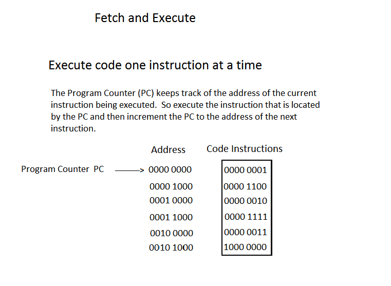
The image below shows step by step how the three OpCodes in our program get executed during the Fetch and Execute process. Note that this is a simplified description of the Fetch and Execute. Not mentioned are the roles that other CPU registers play in handling the Operand values. Of interest in this process is the contents of the Program Counter (PC), the Accumulator (AC) and the memory location 1000 0000 where the result will be stored. Remember that the Accumulator is a special CPU register where addition is done.
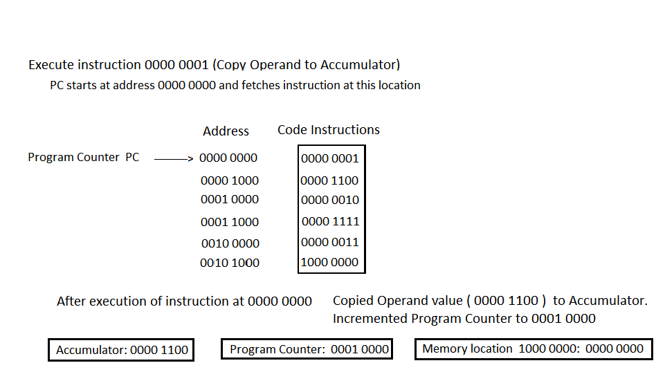
In the image above, the PC holds the address of the first OpCode (0000 0000). It fetches the OpCode located at address 0000 0000. The OpCode at this address is 0000 0001. This bit pattern corresponds to the OpCode that copies its Operand to the Accumulator. The Operand which is located in address 0000 1000 has a value of 0000 1100 (which is 12 in decimal). When the OpCode is executed, the Accumulator contains the value of the OpCode's Operand (0000 1100). The Program Counter is then incremented to the address of next OpCode, which is 0001 0000.
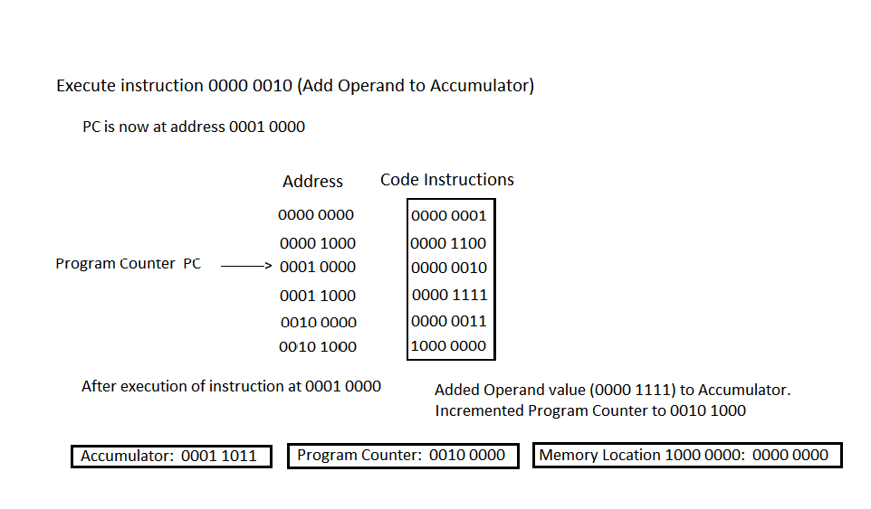
In the image above, the PC holds the address of the next OpCode (0001 0000). It fetches the OpCode located at address 0001 0000. The OpCode at this address is 0000 0010. This bit pattern corresponds to the machine OpCode that adds its Operand to the Accumulator. The Operand which is located in address 0001 1000 has a value of 0000 1111 (which is 15 decimal). When the OpCode is executed, the Accumulator contains the sum of 0000 1100 and 0000 1111, which is 0001 1011 (which is 12 + 15 = 27). The Program Counter is then incremented to the next OpCode address which is 0010 0000.
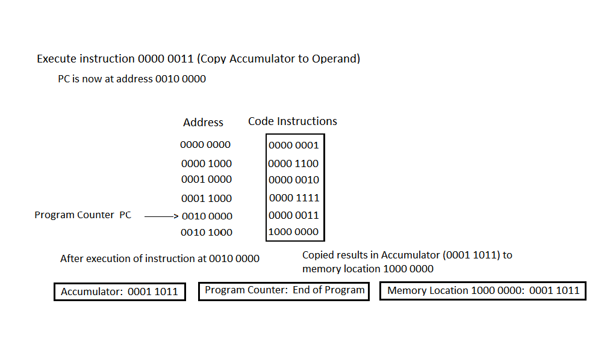
In the image above, the PC holds the address of the next OpCode (0010 0000). It fetches the OpCode located at address 0010 0000. The OpCode at this address is 0000 0011. This bit pattern corresponds to the machine OpCode that copies the current value in the Accumulator to the address contained in its Operand (address 1000 0000). When the OpCode is executed, the memory address 1000 0000 contains the result that was found in the Accumulator (0001 1011) (which is 27). The Program Counter is incremented and finds that it has come to the end of the program.
Now that you understand how the CPU executes a program, you may be wondering how the CPU is able to execute more than one program at a time. That is, how it is able to multi-task. You know that while you are talking on your smart phone, at the same time you can go to your calendar and view or enter a new date. Or while working on a spreadsheet you can simultaneously listen to music. In fact, when you turn on your device, a whole host of background processes are launched. For example, on a machine running Windows 10 you can use the Task Manager to view background processes:
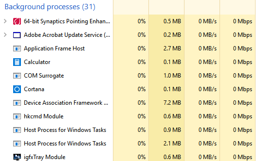
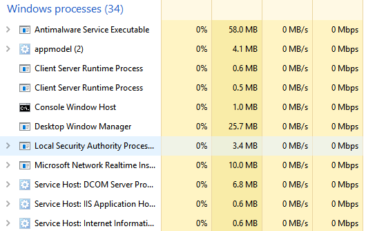
In the images above you can see that there are 31 background processes and 34 Windows processes all running simultaneously! How can the CPU run 65 programs at once? The simple answer to this question is that the CPU creates an illusion that all 65 programs are running simultaneously. We humans are all used to experiencing illusions in our everyday lives. When you watch a movie or watch TV, you are seeing an illusion of motion. Movies are created by displaying about 24–48 still frames per second. TV is broadcast at about 50–60 frames per second. So the illusion of motion is accomplished by quickly throwing consecutive images at your brain at a rate beyond which it can perceive individual images. The same is true for a CPU.
If a CPU is required to run multiple programs at once, it simply runs each program a little bit at a time. That is, each program gets a small time slice of the CPU's attention. You have seen a simplified description of how the CPU executes one program. The CPU has a number of high speed registers (remember the Program Counter for one) that aid in the execution of an instruction. At any point in the execution of a program, the registers in the CPU contain the state of the program execution. So in order to time slice programs, the CPU executes a little bit of one program, then saves the program's state in dedicated high speed registers, recalls another program's state, executes a little bit of that program, saves its state, and so on. If you time slice through about 65 programs, it would seem an impossible task to give the appearance that they are all running simultaneously. But consider this: On a typical CPU that operates at about 3 GHz it can execute well over 100,000 Million instructions per second (100,000 MIPS) or 100 Billion instructions per second. To put it another way, the old iPhone 6 could perform all the calculations necessary to guide 120 million Apollo missions simultaneously.
We may scoff at the fact that the multi-tasking that a computer appears to provide is just an illusion that is accomplished by doing many single tasks quickly. The human mind is able to multi-task automatically. Right? It is true that the human body has multiple "processors" that enable it to multi-task. For example, your heart beats while you drive a car. Your body digests food while you read this text. But what about the mind itself? What about the part of the mind that we use to think and to perceive? Let's try an experiment. Look at the figure below and be aware of what you are perceiving:
Most people have two separate perceptions of the above image. One perception is a black vase on a white background. Another perception is two white faces on a black background. This well known image (I call it the Face and Vase Image) is used to demonstrate properties of human perception, the most important of which is that the eyes are just light gathering instruments and that the brain actually does the interpretation. But I would like to use the image to illustrate another important property of our brain. Instead of telling you what that property is, try this 2-part experiment: Look at the above Face and Vase Image.
Part 1: If you just stare at it you will probably flip back and forth between face and vase without any effort. Notice that with a little work, you can actually force your brain to perceive what you want to see. Tell your brain to see faces and it eventually will. Tell your brain to perceive a vase and it eventually will. Try it.
Part 2: Now we will see if the perception or thinking part of your brain can truly multi-task. Go back to the Face and Vase Image and try to hold both perceptions at the same time. Remember that quickly switching back and forth between perceptions is NOT multi-tasking in the true sense.
Maybe there was something illusionary about the Face and Vase Image. Try the same two-part experiment on the cube image below. In this image try to determine whether the red dot lies on an outside corner or an inside corner of the cube.
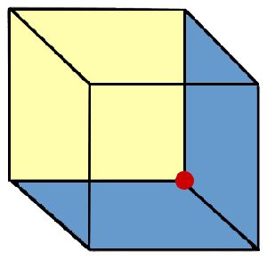
If someone tells you that they can multi-task (I am thinking of teenagers that phone text or listen to music while studying, or worse, anyone who thinks that they can talk on the phone while driving), suggest to them to try the above experiment. Just like a computer, your brain time slices. It does not multi-task. You know what happens to your computer when you try to run too many programs at once — it slows down. So when we attempt to do many thinking tasks at once, all we do is load and slow our brain. In addition, research is showing that the quality and accuracy of thought on each task is diminished. One researcher, Clifford Nass, made this humorous comment: "The research is almost unanimous, which is very rare in social science, and it says that people who chronically multi-task show an enormous range of deficits. They're basically terrible at all sorts of cognitive tasks, including multi-tasking." Well stated, Clifford.
Congratulations! Those of you that have stayed until the end of this movie have just learned how your computer, tablet, smart phone, automobile, etc. actually execute a program. The important point to keep in mind through all of this is to think about every program your devices execute, including phone calls, a spreadsheet, a video, a tee time signup, a Facebook posting, a simulator that emulates supersonic flow past a wing, a viewer of your family photos, etc. No matter what the program does, no matter how complicated the program is, your program is nothing more than a combination of about 100–150 basic machine code instructions. So even though the Wizard of Oz can display all sorts of magical looking illusions, when the curtain that hides him is pulled back, you see that he is just a simple person.
If you have carefully read everything in this article, you deserve to be rewarded. Remember at the start of this article I presented the image of a tiger that was made completely out of triangles? The purpose was to illustrate how variations of a simple theme can become beautiful creations. Well that idea is most famously illustrated in music. If you have the time and some headphones that you can plug into your computer, I would like to present three examples where a composer takes a simple theme and makes incredible music out of variations on that theme.
First up are 12 variations on a theme that everyone in the world knows. Mozart took the theme from a French folk song called "Ah! vous dirai-je, maman" (later known as Twinkle, Twinkle Little Star) and wrote 12 variations of that theme. Since this theme is usually associated with children's music, it is appropriate that a child of 11 years play it for you.
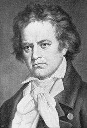
Next up is a theme that is composed of only 4 notes. But this theme is the most famous 4 notes in all of music. This is of course the first movement of Beethoven's Fifth Symphony. If you have not listened to this symphony, just follow the 4 notes throughout the first movement as they get rendered on different instruments with different expression and see how Beethoven weaves them together with the most incredible passion. Keep in mind that the composer had lost about 90% of his hearing at the time he wrote this music. Yet his genius still shines through. Presented here is the full symphony. After all, how could you listen just to the first movement?
Finally is an example of the master of variations on a theme. J.S. Bach not only wrote variations on a theme, but put them in a musical form called a fugue. This musical form plays the theme in different keys that overlap. The following fugue was originally written for the organ. Back in the 1600's organs were built into churches, or better put, churches were built around the organ. The organ is a powerful instrument and is most often thought of as a masculine instrument because of its power. In the mid 1800's Franz Liszt transcribed many of Bach's organ pieces for the piano, and that transcription made it possible for musicians to interpret his music in many different ways. Bach's fugue in A minor is one of his most famous fugues, and is my favorite. So here is an interpretation that is definitely feminine, interpreted by Svetla Protich. If you are interested in hearing this fugue played on the organ, here is the masculine version. Note that the organ is played with 2 hands AND 2 feet.